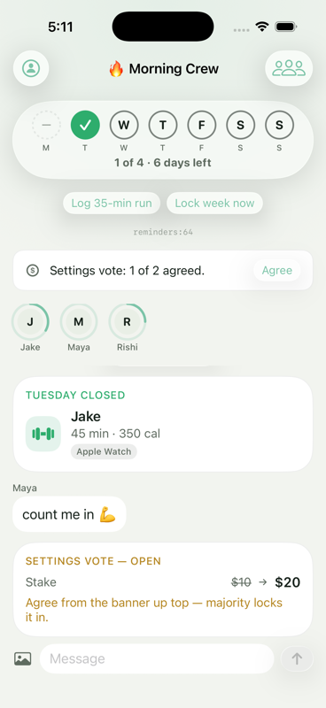
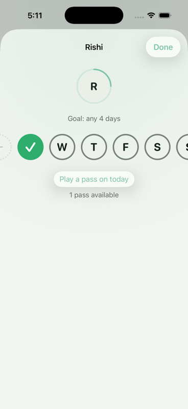
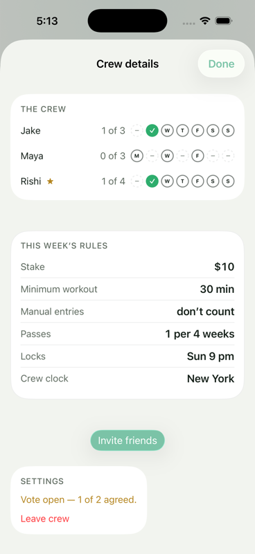
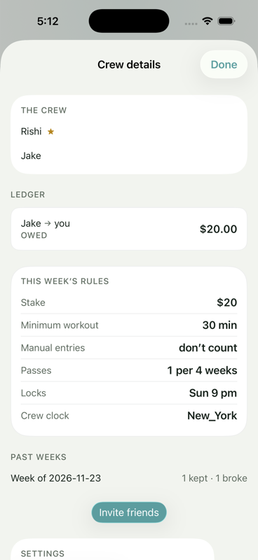
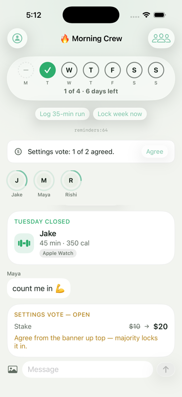

Crew Walkthrough
Every flow below is the actual app running against the real server — each screen is a simulator capture from a seeded three-person crew. Drop change requests into the ROADMAP Inbox and they'll be built. The tiny reminders:64 label and the two pill buttons under the strip are dev-only chrome; they don't ship.
Welcome → signed in
Three screens, then done: sign in (Apple), your name, the honest Health ask. The circles on the Welcome screen animate through a week filling green.
- A1 Sign in with Apple; Google verifies server-side (SDK lands at TestFlight).
- A3 Health is auto-pull only — hand-typed entries never count anywhere.
- Skipping Health leaves a working app with a connect banner.

One crew. Two paths in.
Signed in without a crew, this is the whole screen: create yours or join your friends'. One crew at a time — once you're in, the crew IS the app.
- P6 Creating or joining while in a crew is refused server-side.
- Account (top-left): name, Venmo / Cash App / Zelle handles, streaks.


Adjust, don't build
Identity (name, emoji, accent, the crew clock) then the contract — every rule preset to a good default. A creator who touches nothing has a great crew. $0 stake is pride mode.
- C2 Stake presets, minimum workout, passes, lock time; calorie floor and stacking behind one disclosure.
- Minimum workout is a 20 / 30 / 40 choice; the crew can re-vote it later.

Your week, your terms
One decision: specific days (tap the circles) or flexible (a big rounded number). Frozen at Sunday-night lock; the lock posts a card to the chat naming who's in.
- K1/K2 Every member independent — Mon/Wed/Fri next to "any 4".
- K4 No commitment by lock → last week's rolls over, announced.
- Flexible still lives on the 7 real days — and turns red the moment the target is out of reach.

Workouts post themselves
The glass strip holds your circles; chat carries the crew. The moment Apple Health syncs a qualifying workout, the circle springs green (with the one sanctioned haptic) and a card lands in the chat with the source badge. Your own card offers "Add a photo" for 24 hours.
- W4 Source always shown; manual entries labeled and never counted.
- P6 One real workout counts in every crew you're in (Jake's ride posted to both his crews).
- V6 Long-press your ring → play a pass; it goes neutral, never retroactive.
- Reactions, photos, author-delete; system cards are permanent (W5).



Your crew & the vote
Top-right opens the whole state: every member's week against the goal they chose, this week's locked rules, ledger, history. Settings change by majority vote — anyone proposes, it posts to the chat, the banner collects Agrees, and a majority locks it in for next week.
- G1 One open vote at a time; nothing ever changes mid-week.
- G3 Leaving mid-week while locked in counts as breaking — said plainly on the confirm.
- G4/G5 Remove (next week), transfer captaincy, archive once debts settle.

The recap lands in the chat
After the last day's 3 a.m. grace, the summary card posts: everyone's verdict and the exact money lines, cent-split deterministically. Breakers settle with a Venmo deep link (amount prefilled), Cash App, or Zelle (handle copied for your bank app), mark paid, and the keeper confirms. A perfect week plays the celebration — once.
- S2 Everyone kept → streak +1. Everyone broke → no money moves. One keeper takes full stakes.
- S3 Gentle nags every 3 days, three times, then silence.
- S4 Milestones at 4 / 10 / 26 / 52 weeks.



Widget + dark mode
Small and medium widgets show your seven circles, streak flame, and the day's status; they refresh on every sync and deep-link into the crew. Dark mode is first-class throughout (gym lighting).
Widget placement on the home screen is the one manual step — add it from the widget gallery after installing.

Where the build stands
Everything buildable is shipped and verified: 80 server tests (time-traveled weeks, DST, cent-exact splits, majority votes, single-crew rule) and 12 end-to-end UI flows run green in CI on every push, after a live security attack pass. The full flow matrix lives in TESTPLAN.md; the credential-gated TestFlight steps (Apple team, APNs key, Fly, R2, Google OAuth, on-device week with friends) in TESTFLIGHT.md.
Repo: github.com/Rishiaccelitude/crew · specs: REQUIREMENTS.md · ARCHITECTURE.md · DESIGN.md